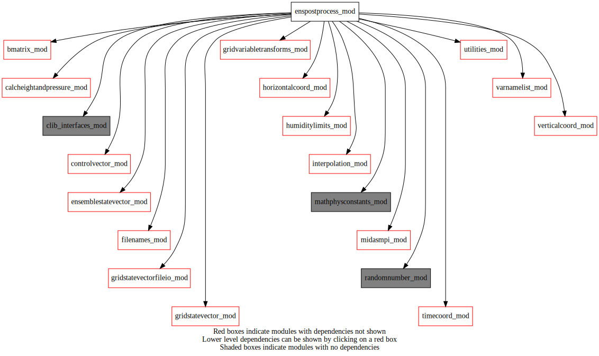
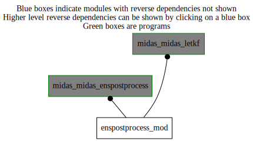

Dependency Diagrams:
 Direct Dependency Diagram¶
 Reverse Dependency Diagram¶
Description
MODULE ensPostProcess_mod (prefix=’epp’ category=’1. High-level functionality’)
- Purpose
Various routines that are used to modify or process ensembles, usually produced by the LETKF.
Quick access
- Routines
epp_addrandompert(),epp_hybridrecentering(),epp_postprocess(),epp_printrmsstats(),epp_rtpp(),epp_rtps(),epp_selectsubsample(),epp_writetoallmembers()Needed modules
midasmpi_mod: MODULE midasMpi_mod (prefix=’mmpi’ category=’8. Low-level utilities and constants’)
utilities_mod: MODULE utilities_mod (prefix=’utl’ category=’8. Low-level utilities and constants’)
mathphysconstants_mod: MODULE MathPhysConstants_mod (prefix=’mpc’ category=’8. Low-level utilities and constants’)
timecoord_mod: MODULE timeCoord (prefix=’tim’ category=’7. Low-level data objects’)
verticalcoord_mod: MODULE verticalcoord (prefix=’vco’ category=’7. Low-level data objects’)
horizontalcoord_mod: MODULE HorizontalCoord_mod (prefix=’hco’ category=’7. Low-level data objects’)
ensemblestatevector_mod: MODULE ensembleStateVector_mod (prefix=’ens’ category=’6. High-level data objects’)
gridstatevector_mod: MODULE gridStateVector_mod (prefix=’gsv’ category=’6. High-level data objects’)
gridstatevectorfileio_mod: MODULE gridStateVectorFile_mod (prefix=’gio’ category=’4. Data Object transformations’)
interpolation_mod: MODULE interpolation_mod (prefix=’int’ category=’4. Data Object transformations’)
randomnumber_mod: MODULE randomNumber_mod (prefix=’rng’ category=’8. Low-level utilities and constants’)
controlvector_mod: MODULE controlVector_mod (prefix=’cvm’ category=’6. High-level data objects’)
gridvariabletransforms_mod: MODULE gridVariableTransforms (prefix=’gvt’ category=’4. Data Object transformations’)
bmatrix_mod: MODULE BMatrix_mod (prefix=’bmat’ category=’2. B and R matrices’)
humiditylimits_mod: MODULE humidityLimits_mod (prefix=’qlim’ category=’4. Data Object transformations’)
varnamelist_mod: MODULE varNameList (prefix=’vnl’ category=’7. Low-level data objects’)
filenames_mod: MODULE fileNames_mod (prefix=’fln’ category=’7. Low-level data objects’)
clib_interfaces_mod: MODULE clib_interfaces_mod (prefix=’’ category=’9. Global interfaces’)
calcheightandpressure_mod: MODULE czp_calcHeightAndPressure (prefix=’czp’ category=’4. Data Object transformations’)Variables
Subroutines and functions
- subroutine enspostprocess_mod/epp_postprocess(ensembletrl, ensembleanl, statevectorheightsfc, statevectorctrltrl, writetrlensemble[, outputonlyensmean_opt])¶
- Purpose
Perform numerous post-processing steps to the ensemble produced by the LETKF algorithm.
- Arguments
ensembletrl [struct_ens ,inout]
ensembleanl [struct_ens ,inout]
statevectorheightsfc [struct_gsv ,in]
statevectorctrltrl [struct_gsv ,inout]
writetrlensemble [logical ,in]
- Options
outputonlyensmean_opt [logical ,in,]
- Called from
- Call to
ens_isallocated(),ens_gethco(),ens_getvco(),ens_getnummembers(),utl_abort(),gsv_allocate(),tim_getdatestamp(),gsv_zero(),ens_computemean(),ens_copyensmean(),ens_computestddev(),ens_copyensstddev(),gsv_copy(),epp_rtpp(),epp_rtps(),epp_hybridrecentering(),epp_selectsubsample(),epp_addrandompert(),ens_recenter(),gio_getmasklam(),tim_getstamplist(),ens_varnameslist(),ens_allocate(),ens_copy(),ens_add(),ens_applymasklam(),gsv_varnameslist(),gsv_add(),gsv_applymasklam(),utl_tmg_start(),fln_enstrlfilename(),ens_copymasktogsv(),gio_writetofile(),epp_printrmsstats(),utl_tmg_stop(),ens_writeensemble(),gsv_isallocated(),gsv_copyheightsfc(),gsv_transposetilestompiglobal(),fln_ensanlfilename(),epp_writetoallmembers()
- subroutine enspostprocess_mod/epp_writetoallmembers(statevector, nens, etiket, typvar, filenamesuffix, enspath)¶
- Purpose
Write the contents of the supplied stateVector to all ensemble member files in an efficient parallel way.
- Arguments
statevector [struct_gsv ]
nens [integer ]
etiket [character ]
typvar [character ]
filenamesuffix [character ]
enspath [character ]
- Called from
- Call to
- subroutine enspostprocess_mod/epp_rtps(ensembleanl, statevectorstddevanl, statevectorstddevtrl, statevectormeananl, alphartps)¶
- Purpose
Apply Relaxation To Prior Spread ensemble inflation according to the factor alphaRTPS (usually between 0 and 1).
- Arguments
ensembleanl [struct_ens ]
statevectorstddevanl [struct_gsv ]
statevectorstddevtrl [struct_gsv ]
statevectormeananl [struct_gsv ]
alphartps [real ]
- Called from
- Call to
ens_getnummembers(),ens_getnumk(),ens_getlatlonbounds(),ens_getonelev_r4()
- subroutine enspostprocess_mod/epp_rtpp(ensembleanl, ensembletrl, statevectormeananl, statevectormeantrl, alphartpp)¶
- Purpose
Apply Relaxation To Prior Perturbation ensemble inflation according to the factor alphaRTPP (usually between 0 and 1).
- Arguments
ensembleanl [struct_ens ]
ensembletrl [struct_ens ]
statevectormeananl [struct_gsv ]
statevectormeantrl [struct_gsv ]
alphartpp [real ]
- Called from
- Call to
ens_getnummembers(),ens_getnumk(),ens_getlatlonbounds(),ens_getonelev_r4()
- subroutine enspostprocess_mod/epp_addrandompert(ensembleanl, statevectorrefstate, alpharandompert, randomseed, usememberashurefstate)¶
- Purpose
Apply additive inflation using random perturbations from sampling the B matrix as defined by the regular namelist block NAMBHI, NAMBEN, etc. The scale factor alphaRandomPert (usually between 0 and 1) is used to simply multiply the resulting perturbations before adding to the original members. The perturbations have zero ensemble mean.
- Arguments
ensembleanl [struct_ens ,inout]
statevectorrefstate [struct_gsv ,in]
alpharandompert [real ,in]
randomseed [integer ,in]
usememberashurefstate [logical ,in]
- Called from
- Call to
utl_tmg_start(),ens_getnummembers(),ens_getnumk(),ens_getlatlonbounds(),ens_getvco(),ens_gethco(),hco_setupfromfile(),vco_setupfromfile(),vco_getnumlev(),ens_varnameslist(),ens_varexist(),utl_tmg_stop(),bmat_setup(),gvt_setup(),rng_setup(),gsv_allocate(),tim_getdatestamp(),gsv_copy(),int_interp_gsv(),gsv_deallocate(),rng_gaussian(),bmat_reducetompilocal(),bmat_sqrtb(),ens_copymember(),gsv_scale(),ens_getvarnamefromk(),ens_getonelev_r4(),gsv_isallocated()
- subroutine enspostprocess_mod/epp_selectsubsample(ensembleanl, ensembleanlsubsample[, ensembletrl_opt[, ensembletrlsubsample_opt]])¶
- Purpose
Create sub-sampled ensembles of analyses and trials based on the contents of the ascii files ‘sampletable’ which lists the member indices for the subsample.
- Arguments
ensembleanl [struct_ens ]
ensembleanlsubsample [struct_ens ]
- Options
ensembletrl_opt [struct_ens ]
ensembletrlsubsample_opt [struct_ens ]
- Called from
- Call to
tim_getstamplist(),tim_getdatestamp(),ens_allocate(),ens_gethco(),ens_getvco(),gsv_allocate(),ens_copymember(),ens_insertmember(),gsv_deallocate()
- subroutine enspostprocess_mod/epp_hybridrecentering(ensembleanl, weightrecenter, weightrecenterland, useoptiontablerecenter, nummemberstorecenter)¶
- Purpose
Modify an ensemble by recentering the members on a state provided in the file “recentering_analysis”. The “weightRecenter” and “numMembersToRecenter” are used in the calculation to determine the amount of recentering and how many members it is applied to. Alternatively the information in the “optiontable” file can be used to perform a different amount of recentering on each member.
- Arguments
ensembleanl [struct_ens ]
weightrecenter (*) [real ]
weightrecenterland [real ]
useoptiontablerecenter [logical ]
nummemberstorecenter [integer ]
- Called from
- Call to
utl_abort(),ens_gethco(),ens_getvco(),ens_getnummembers(),utl_parsecolumns(),vco_getnumlev(),gsv_allocate(),tim_getdatestamp(),gsv_zero(),gio_readfromfile(),ens_recenter(),gsv_deallocate()
- subroutine enspostprocess_mod/epp_printrmsstats(statevectorstddev, filename, elapsed, ftype, nens)¶
- Purpose
Print statistics of a field to an ASCII output file
- Arguments
statevectorstddev [struct_gsv ]
filename [character ]
elapsed [real ,in]
ftype [character ,in]
nens [integer ,in]
- Called from
- Call to
gsv_getvco(),vco_getnumlev(),gsv_getnumk(),gsv_gethco(),hco_weight(),mmpi_allreduce_sumreal8scalar(),gsv_getlevfromk(),gsv_getvarnamefromk(),vnl_varlevelfromvarname(),utl_abort()
{kind=link}
{kind=link}